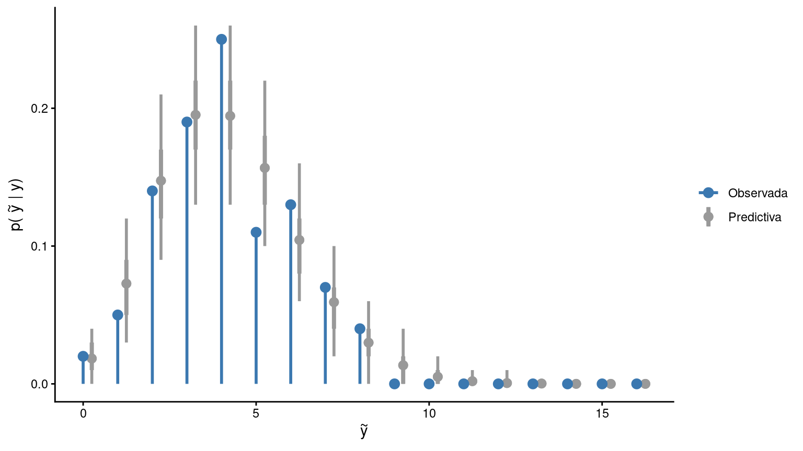

La situación de las guardias médicas en la localidad de Coronel Vallejos es insostenible. La asociación vecinal del pueblo, en representación de una comunidad ya harta de las esperas eternas y de los pasillos abarrotados de rostros sufrientes, decidió tomar cartas en el asunto y exigir de manera formal la renuncia del Secretario de Salud, el Dr. Aschero.
El reclamo popular es claro: queremos que haya más médicos en las guardias. Hoy en día, una urgencia médica pone en riesgo la salud y a prueba la paciencia. Los mayores se sienten destratados, los niños padecen, lloran, se aburren y los padres desesperan. Si hay más médicos en las guardias, todos podemos ser atendidos en tiempo y forma, y el servicio mejora, insisten los vecinos.
Aschero, quien gracias a su admirable plasticidad ideológica supo sobrevivir en el cargo a gobiernos de todo tinte, comprendió que esta vez el reclamo iba en serio y que para salir airoso de este percance era necesario tomar cartas en el asunto.
Acostumbrado a gestionar conflictos, el Dr. Aschero explicó que no es sensato contratar más médicos de guardia sin planificación alguna. El financiamiento de los hospitales de Coronel Vallejos proviene exclusivamente de las arcas municipales, e incrementar la planta de urgencias descuidadamente podría significar un golpe devastador para el presupuesto hospitalario.
Con el objetivo de garantizar una planta de urgencias acorde a las necesidades de los vecinos, sin incurrir en contrataciones innecesarias ni gastos desmedidos, y a la vez ganar tiempo, Aschero decide implementar el Plan de Dotación Inteligente. La propuesta consiste en ajustar la cantidad de médicos en función de la afluencia a la guardia. Mientras que en los turnos de mayor demanda se incorporará un mayor número de profesionales, en los más tranquilos la dotación será reducida.
Para determinar de manera rigurosa la demanda y establecer cuántos médicos deben contratarse en cada turno, se lleva adelante el Relevamiento Sistemático de Demanda Sanitaria, que consiste en registrar el horario de ingreso de las personas que concurren a las guardias de los hospitales locales en distintas horas del día, a lo largo de un período determinado.
Según el Dr. Aschero, los datos recabados permitirán estimar de manera muy precisa la dotación médica necesaria, aquella que equilibra una atención rápida y segura con el resguardo de la salud de las cuentas públicas.
Actividades
Primera parte
El archivo tp2_llegadas_h1.csv contiene los horarios de ingreso de pacientes a la guardia del Hospital Dr. Manuel Puch entre el 1 de febrero de 2026 y el 3 de abril del mismo año, dentro de la franja horaria comprendida entre las 22:00 y las 00:00 horas.
En esta primera parte interesa modelizar la cantidad de personas que ingresan a la guardia por hora mediante un modelo gamma-Poisson.
Explique qué representa el parámetro \(\mu\) en el contexto del problema. ¿Cómo debe interpretarse que tome valores mayores o menores?
Proponga una distribución a priori para \(\mu\) y obtenga de manera exacta la distribución a posteriori. ¿Qué implica sobre el tiempo promedio entre llegada de pacientes?
Lea los datos, realice una exploración inicial y describa la cantidad de personas que ingresan a la guardia por hora. ¿Se observa algún patrón o alguna tendencia a medida que transcurre el tiempo?
Encuentre y grafique la distribución predictiva a posteriori para la cantidad de personas que llegan a la guardia en una hora.
¿Cuál es la probabilidad de que lleguen entre 5 y 10 personas por hora? ¿Y de que lleguen 10 o más?
A continuación, se aborda el mismo problema desde un enfoque inferencial general basado en Markov Chain Montecarlo (MCMC).
Utilice 4 cadenas independientes y obtenga 5000 muestras de cada una de la distribución a posteriori de \(\mu\) utilizando el algoritmo de Metropolis-Hastings con una distribución de propuesta normal. Para ello, determine un desvío estándar \(\sigma\) adecuado y utilice puntos iniciales aleatorio dentro de un rango razonable para \(\mu\).
Visualice la trayectoria de las cadenas mediante un traceplot. Describa lo que observa y discuta si resulta necesario descartar muestras iniciales. En caso afirmativo, descarte una cantidad de muestras que considere adecuada. Luego, calcule el diagnóstico \(\hat{R}\), el tamaño efectivo de muestra \(N_\text{eff}\) e interprete.
Compare la distribución a posteriori exacta de \(\mu\) con la aproximada mediante MCMC. ¿Qué observa?
Estime las probabilidades pedidas en el punto 5 a partir de las muestras obtenidas con el algoritmo de Metropolis-Hastings y concluya.
En este problema, el parámetro \(\mu\) tiene soporte en \((0, \infty)\) pero la distribución de propuesta normal tiene soporte en \(\mathbb{R}\).
Explique por qué el uso de una distribución de propuesta normal puede resultar inconveniente en este contexto.
Obtenga nuevamente muestras de la distribución a posteriori de \(\mu\) usando 4 cadenas de 5000 pasos, pero evitando los inconvenientes señalados en el punto anterior. Para ello, transforme la variable aleatoria de manera tal que la nueva variable tenga soporte en \(\mathbb{R}\) y permita trabajar con una propuesta normal.
TipEspacios paramétricos acotados
Cuando el parámetro de interés tiene soporte acotado, una propuesta normal puede resultar en un comportamiento no deseado para las muestras. Una forma general de evitar este problema consiste en transformar el parámetro a una nueva variable con soporte no acotado.
Por ejemplo, si se define \[
\eta = \log(\mu),
\]
entonces \(\eta \in \mathbb{R}\) y se puede utilizar una propuesta normal para obtener muestras de \(\eta\).
En general, si \(X\) es una variable aleatoria continua con densidad conocida y se define una transformación uno a uno \(Y = g(X)\), la densidad de la variable transformada queda dada por
Luego, se pueden obtener muestras de \(Y\) a partir de la densidad \(f_Y\) y transformar esas muestras mediante \(g^{-1}\) para obtener muestras de \(X\).
Compare brevemente los resultados con los del punto 6, visualizando nuevamente las trayectorias y calculando \(\hat{R}\) y \(N_\text{eff}\).
Vuelva a estimar las probabilidades del punto 5 y concluya.
Segunda parte
El archivo tp2_llegadas_h2.csv contiene los horarios de ingreso de pacientes a la guardia del otro hospital de Coronel Vallejos, el Hospital Dr. Juan José Malbrán. A diferencia del Hospital Puch, en el Hospital Malbrán los datos se recolectaron en distintas franjas horarias del día.
En esta parte interesa modelizar nuevamente la cantidad de personas que ingresan a la guardia por hora, utilizando el mismo modelo gamma-Poisson ya considerado. Sin embargo, en esta oportunidad se trabajará únicamente con inferencia basada en MCMC.
Lea los datos y realice una exploración inicial de la cantidad de personas que llegan por hora. Describa brevemente qué características observa en comparación con los datos del Hospital Dr. Juan Manuel Puch.
Considere nuevamente el modelo gamma-Poisson, ahora para la cantidad de pacientes que ingresan por hora a la guardia del Hospital Malbrán, y obtenga muestras de la distribución a posteriori de \(\mu\) utilizando Metropolis-Hastings bajo las mismas condiciones que en el punto 11.
Estime la probabilidad de que lleguen entre 5 y 10 personas por hora y de que lleguen 10 o más.
Hasta aquí, las probabilidades pedidas se estimaron a partir de los modelos ajustados, pero sin evaluar de manera explícita en qué medida dichos modelos logran reproducir razonablemente los datos observados. Una forma cualitativa de estudiar la bondad de ajuste consiste en utilizar pruebas predictivas a posteriori y resumir sus resultados mediante gráficos adecuados.
TipPruebas predictivas a posteriori
Código para simular datos
library(ggplot2)# Simulacion de datos observadoslambda <-4y <-rpois(100, lambda)# Simulacion de muestras predictivas a posterioriy_rep <-matrix(rpois(100*2000, lambda), nrow =100)# Definición de intervalos para obtener conteos con 'hist'breaks <-0:max(y_rep +1) -0.5# Frecuencia relativa observaday_obs <-hist(y, plot =FALSE, breaks = breaks)$countsy_obs <- y_obs /sum(y_obs)# Frecuencia relativa predictivaprops <-apply(y_rep, 2, function(x) { counts <-hist(x, plot =FALSE, breaks = breaks)$counts counts /sum(counts)})# Obtencion de media y bandasy_mean <-apply(props, 1, mean)lower_90 <-apply(props, 1, quantile, 0.05)upper_90 <-apply(props, 1, quantile, 0.95)lower_50 <-apply(props, 1, quantile, 0.25)upper_50 <-apply(props, 1, quantile, 0.75)# Preparacion de datos para el gráficodf <-data.frame(x =0:max(y_rep),y_obs = y_obs,y_mean = y_mean,lower_90 = lower_90,upper_90 = upper_90,lower_50 = lower_50,upper_50 = upper_50)
Código para generar el gráfico
ggplot(df) +geom_pointrange(aes(x = x +0.25, y = y_mean, ymin = lower_90, ymax = upper_90, color ="Predictiva"), size =0.5,linewidth =1, ) +geom_pointrange(aes(x = x +0.25, y = y_mean, ymin = lower_50, ymax = upper_50, color ="Predictiva"), size =0.5,linewidth =1.4, ) +geom_segment(aes(x = x, xend = x, y =0, yend = y_obs, color ="Observada"),linewidth =1 ) +geom_point(aes(x = x, y = y_obs, color ="Observada"), size =3) +scale_color_manual(values =c("Observada"="#3b78b0", "Predictiva"="grey60"),name =NULL ) +labs(x =expression(tilde(y)), y =expression("p("~tilde(y)~"| y)")) +theme_classic()

En este gráfico se realiza un posterior predictive check para evaluar la capacidad del modelo de reproducir la distribución empírica de \(Y\). Para cada muestra del posterior, se generan predicciones de \(Y\) para las \(n\) observaciones y se calculan sus frecuencias relativas. Estas se comparan con las frecuencias observadas para cada valor de \(Y\). Un buen ajuste se refleja en que las frecuencias observadas resultan compatibles con la variabilidad inducida por las simulaciones del modelo.
Realice pruebas predictivas a posteriori para evaluar la adecuación del modelo gamma-Poisson ajustado para ambos hospitales. Compare ambos casos y discuta qué encuentra.
Ahora se propone reemplazar el modelo por uno más flexible, que utiliza la distribución binomial negativa para \(Y\): \[
\begin{aligned}
Y \mid \mu, \phi & \sim \text{BinomialNegativa}(\mu, \phi) \\
\mu &\sim \text{Gamma}(\alpha, \beta) \\
\phi &\sim \text{Exponencial}(\lambda)
\end{aligned}
\]
TipDistribución binomial negativa
A diferencia de la distribución de Poisson, la binomial negativa permite que la varianza de \(Y\) sea mayor que su media. Si se utiliza la parametrización basada en media \(\mu\) y sobredispersión \(\phi\), la se tiene que:
En R, se puede evaluar la densidad binomial negativa con esta parametrización de la siguiente forma:
dnbinom(x, mu = mu, size =1/ phi)
Considere, para ambos hospitales, un modelo alternativo basado en la distribución binomial negativa parametrizada en términos de media \(\mu\) y sobredispersión \(\phi\).
Compare la distribución de Poisson con la distribución binomial negativa bajo la parametrización propuesta. En particular, describa qué ocurre con la esperanza, la varianza y el rol que cumplen los parámetros del modelo en cada caso.
Proponga una distribución a priori para \(\phi\). ¿Qué efecto tiene en la varianza de \(Y\)?
Discuta si resulta conveniente trabajar con una única distribución a posteriori conjunta de cuatro dimensiones para \((\mu_1, \phi_1, \mu_2, \phi)\) o con dos distribuciones a posteriori separadas de dos dimensiones, una para \((\mu_1, \phi_1)\) y otra para \((\mu_2, \phi_2)\).
Obtenga muestras de la distribución a posteriori de \((\mu_1, \phi_1, \mu_2, \phi_2)\) según la estrategia elegida en el punto anterior y verifique, por los procedimientos usuales, que el algoritmo de muestreo funciona adecuadamente.
Visualice y describa la distribución a posteriori conjunta de \((\mu_1, \phi_1)\) y la de \((\mu_2, \phi_2)\). Compare los resultados entre hospitales e interprete en términos del problema.
Finalmente, interesa traducir la afluencia esperada de pacientes en una decisión concreta de dotación médica.
Suponga que cada atención médica dura, en promedio, 15 minutos y que se busca que las personas esperen a lo sumo 30 minutos para ser atendidas. A partir de esa regla y del posterior sobre la cantidad de pacientes que llegan por hora, determine la distribución a posteriori de la cantidad de médicos que se necesita tener disponibles cada hora. Explique con claridad la regla de conversión utilizada y discuta los resultados para ambos hospitales.